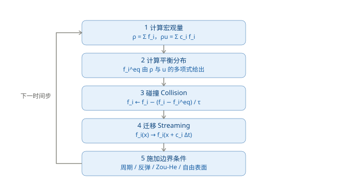
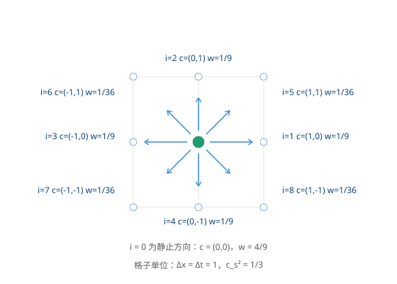

格子玻尔兹曼方法
从格子气到格子玻尔兹曼
1988 年 McNamara 与 Zanetti 提出了关键的一步：不再演化布尔的占据数 \(n_i\)，而是演化它的期望值。
\[f_i(\mathbf{x}, t) = \langle n_i(\mathbf{x}, t) \rangle \in \mathbb{R}\]
\(f_i\) 的物理含义是"沿方向 \(\mathbf{c}_i\) 运动的粒子数密度"。因为直接演化系综平均，涨落不需要事后平均掉——统计噪声归零。
演化方程变成：
\[f_i(\mathbf{x} + \mathbf{c}_i\Delta t, ; t+\Delta t) = f_i(\mathbf{x}, t) + \Omega_i(f)\]
迁移是精确的
LBM 有一个和有限差分类似但更干脆的性质：离散速度的大小恰好使得一个时间步的位移等于一个格间距。
\[|\mathbf{c}_i| \Delta t = \Delta x \quad \Longrightarrow \quad \text{CFL} = 1\]
所以迁移步不需要任何插值、不需要半拉格朗日回溯，只是把数据搬到相邻格点。这一点是从格子气继承来的，代价见后文的弱可压限制。

D2Q9 速度模板
二维最常用的模板是 D2Q9：D = 2 维，Q = 9 个方向。

| 方向 \(i\) | \(\mathbf{c}_i\) | 权重 \(w_i\) |
|---|---|---|
| 0 | (0, 0) | 4/9 |
| 1, 2, 3, 4 | (1,0), (0,1), (-1,0), (0,-1) | 1/9 |
| 5, 6, 7, 8 | (1,1), (-1,1), (-1,-1), (1,-1) | 1/36 |
权重必须满足两条归一化条件，才能保证各向同性：
\[\sum_i w_i = 1, \qquad \sum_i w_i c_{i\alpha}c_{i\beta} = c_s^2 \delta_{\alpha\beta}\]
在格子单位下（\(\Delta x = \Delta t = 1\)），声速为
\[c_s = \frac{1}{\sqrt{3}}, \qquad c_s^2 = \frac{1}{3}\]
三维常用 D3Q19 与 D3Q27，\(c_s^2\) 同样是 1/3。
平衡分布
平衡分布是密度与速度的多项式展开，保留到二阶：
\[f_i^{eq} = w_i \rho \left[ 1 + \frac{\mathbf{c}_i\cdot\mathbf{u}}{c_s^2} + \frac{(\mathbf{c}_i\cdot\mathbf{u})^2}{2c_s^4} - \frac{|\mathbf{u}|^2}{2c_s^2} \right]\]
代入 \(c_s^2 = 1/3\)：
\[f_i^{eq} = w_i \rho \left[ 1 + 3(\mathbf{c}_i\cdot\mathbf{u}) + \frac{9}{2}(\mathbf{c}_i\cdot\mathbf{u})^2 - \frac{3}{2}|\mathbf{u}|^2 \right]\]
这个多项式形式是 LBM 与格子气的又一个分界：格子气的平衡分布是 Fermi-Dirac 型，受排他原理限制；而这里显式写成了 \(\mathbf{u}\) 的多项式，因此伽利略不变性得以恢复。
碰撞：BGK 算子
\[\Omega_i = -\frac{1}{\tau}\left(f_i - f_i^{eq}\right)\]
合起来，一个完整的时间步是：
\[f_i(\mathbf{x}+\mathbf{c}_i\Delta t, t+\Delta t) = f_i(\mathbf{x},t) - \frac{1}{\tau}\left[f_i(\mathbf{x},t) - f_i^{eq}(\mathbf{x},t)\right]\]
宏观量
\[\rho = \sum_i f_i, \qquad \rho\mathbf{u} = \sum_i \mathbf{c}_i f_i, \qquad p = c_s^2 \rho\]
最后一条是状态方程。LBM 中的压强不是待求的 Lagrange 乘子，而是由密度直接给出的。
为什么不需要投影步
这是从 欧拉模型 走过来时最需要对照的一点。
| 步骤 | 有限差分 + 投影法 | 格子玻尔兹曼方法 |
|---|---|---|
| 平流 / 迁移 | 半拉格朗日回溯 + 插值，会耗散 | 沿 \(\mathbf{c}_i\) 精确搬到邻居，无插值 |
| 强制不可压 | 解泊松方程 \(\nabla^2 p = \frac{\rho}{\Delta t}\nabla\cdot\mathbf{u}^*\) | 不需要 |
| 压强来源 | 作为 Lagrange 乘子，由泊松方程求出 | 由状态方程 \(p = c_s^2\rho\) 直接给出 |
| 不可压条件 | 到线性求解精度内满足 | 近似满足，误差 \(O(Ma^2)\) |
| 每步计算量 | 含一次全局线性求解 | 纯局部运算，无全局耦合 |
原因在于：碰撞步把分布函数松弛到局部平衡，非平衡部分自动贡献出粘性应力，Chapman-Enskog 展开在 \(O(Ma^2)\) 精度内给出无散度的速度场。压强的作用被代数松弛取代了。
代价是弱可压：LBM 模拟的实际上是低马赫数的可压缩流体。
参数与稳定性
Chapman-Enskog 展开给出运动粘度与松弛时间的关系：
\[\nu = c_s^2\left(\tau - \frac{1}{2}\right)\Delta t = \frac{1}{3}\left(\tau - \frac{1}{2}\right)\Delta t\]
- \(\tau > 1/2\) 是粘性为正的必要条件
- \(\tau \to 1/2\) 时粘度趋于 0，数值稳定性迅速恶化
- 马赫数 \(Ma = |\mathbf{u}|/c_s\) 需要足够小：工程上常取 \(Ma \lesssim 0.1\)，上限约 0.3；压缩性误差为 \(O(Ma^2)\)
- 由 \(\nu\) 与目标雷诺数 \(Re\) 确定 \(\tau\) 之后，网格分辨率仍受稳定性约束，高雷诺数问题需要更细的网格
与第 11 章的定位对照
| 对照项 | 第 11 章：欧拉模型 | 本章：格子动理学 |
|---|---|---|
| 离散对象 | Navier-Stokes 方程 | 玻尔兹曼输运方程 |
| 状态变量 | \(\rho\)、\(\mathbf{u}\)（宏观场） | \(f_i\)（介观分布函数） |
| 时间步约束 | CFL：\( | \mathbf{u} |
| 压强 | 待求量，来自泊松方程 | 状态方程给出 |
| 主要瓶颈 | 全局线性求解 | 内存带宽（纯局部运算） |
本文出自CaterpillarStudyGroup，转载请注明出处。
https://caterpillarstudygroup.github.io/GAMES103_mdbook/